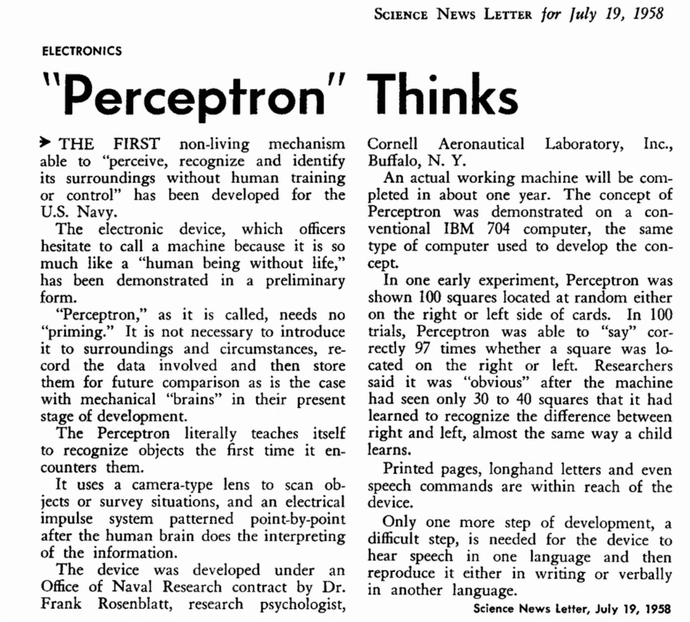
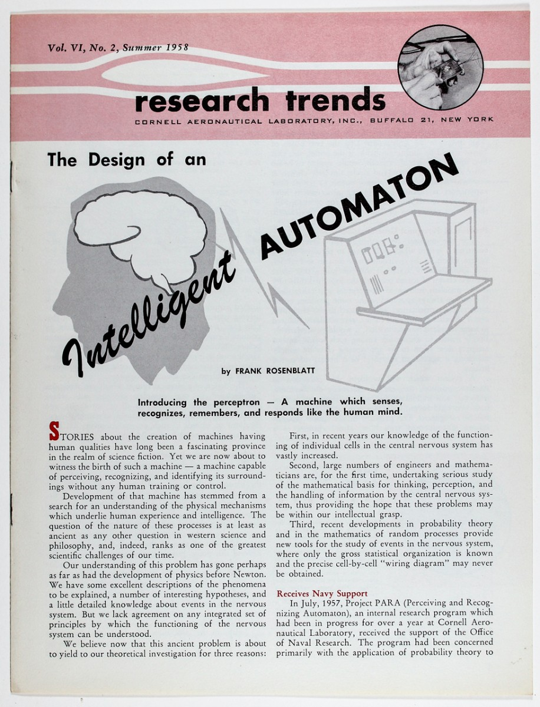
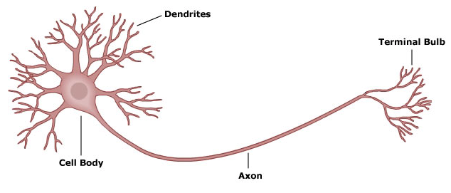
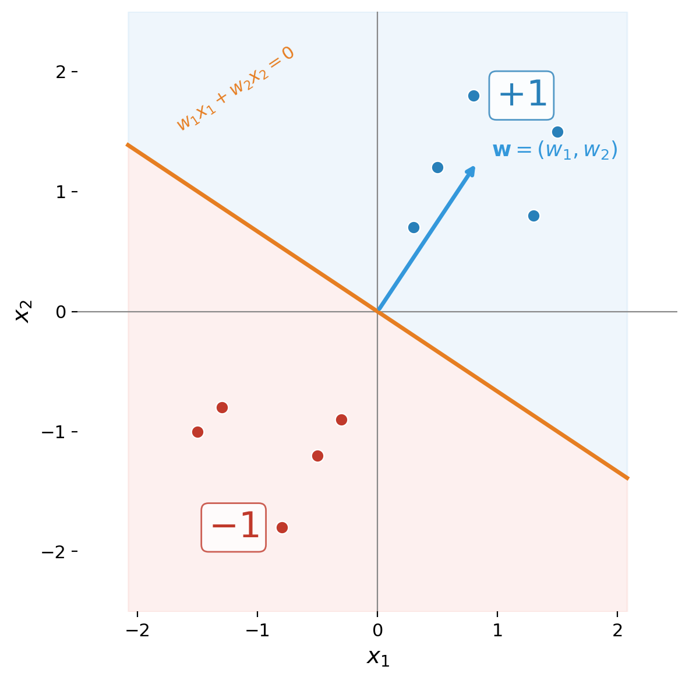
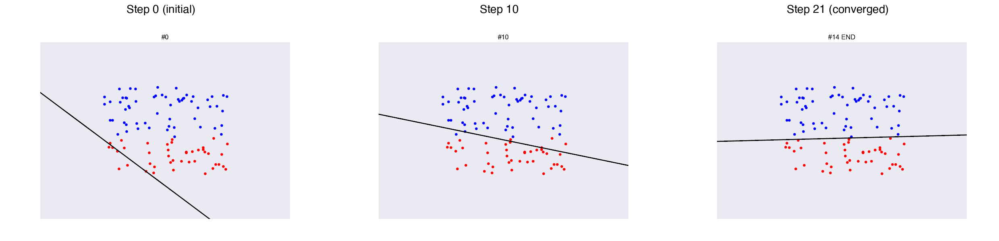
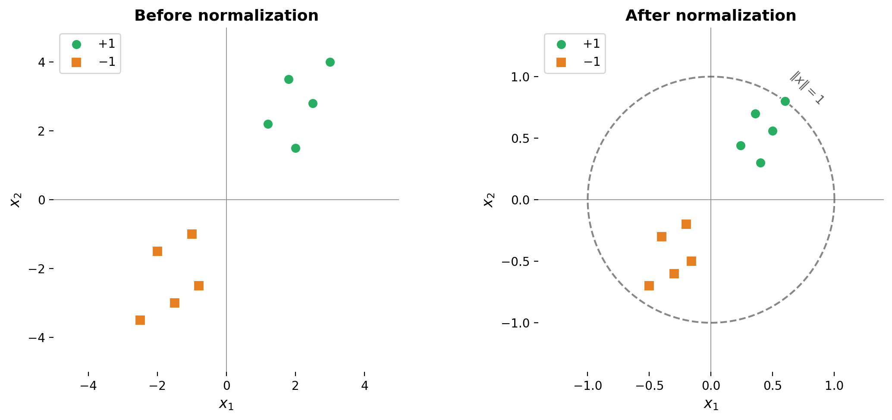
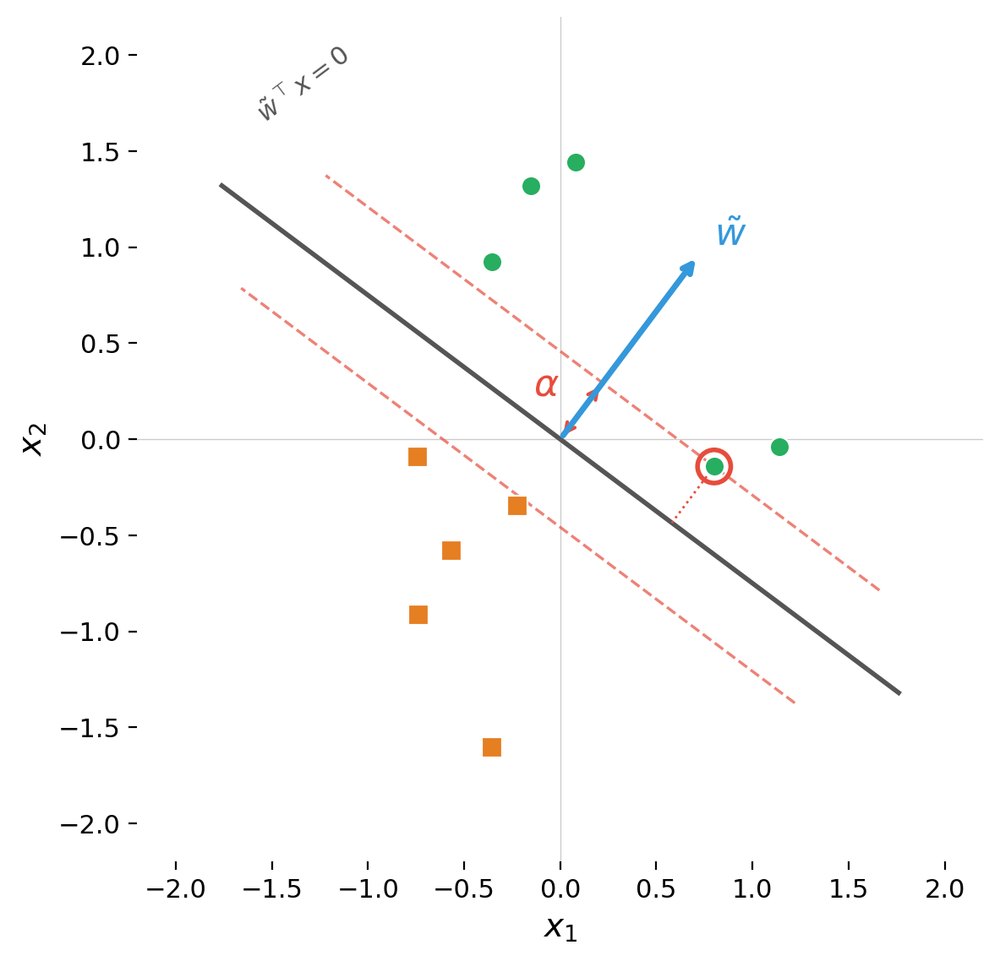
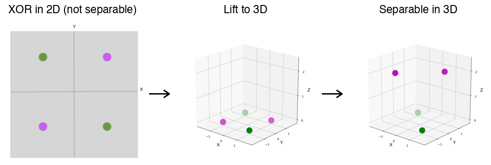
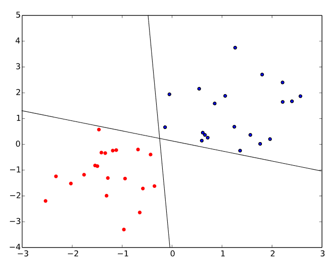

The Rosenblatt Perceptron
Outline
- Historical context
- The perceptron neuron
- Geometric interpretation
- The learning setup
- The learning rule
- Invariance to scaling
- Proof of convergence
- The non-separable case
- Connections to gradient descent and SVMs
Part I: Historical Context
The Mark I Perceptron
- Frank Rosenblatt, Cornell Aeronautical Laboratory, 1957
- Goal: a machine that could learn to recognize patterns
- Built with funding from the Office of Naval Research
- Designed for military applications (e.g., detecting naval mines from sonar)
The Hype

Media Frenzy
The Navy revealed the embryo of an electronic computer that it expects will be able to walk, talk, see, write, reproduce itself and be conscious of its existence. — New York Times, 1958
The perceptron is a single linear classifier — but the core insight was real: a machine could adjust its own parameters in response to data
Rosenblatt's Vision

The Backlash
- Minsky and Papert, Perceptrons (1969)
- Proved a single perceptron cannot solve problems that are not linearly separable (e.g., XOR)
- Widely misinterpreted as a limitation of neural networks in general
- Contributed to the AI winter — decades of reduced funding
Why the Perceptron Still Matters
- First algorithm that genuinely learned from data
- Introduced the paradigm: model + loss + gradient-based optimization
- The learning rule is a direct precursor to backpropagation
- Understanding the perceptron is understanding the foundation of deep learning
Part II: The Perceptron Neuron
Biological Inspiration
- A biological neuron receives signals through dendrites
- Integrates them in the cell body (soma)
- If the combined signal exceeds a threshold, fires along the axon
- The perceptron abstracts this into a mathematical model

Mathematical Model
Input vector $x = (x_1, x_2, \ldots, x_n) \in \R^n$, weight vector $w$
$$z = w^\top x = \sum_{i=1}^n w_i x_i$$
Output determined by comparing to a threshold $\theta$:
$$y = \begin{cases} +1 & \text{if } w^\top x > \theta \\ -1 & \text{if } w^\top x \leq \theta \end{cases}$$
The Perceptron Diagram

Absorbing the Threshold (Bias Trick)
Append $x_{n+1} = 1$ to every input, set $w_{n+1} = -\theta$:
$$\sum_{i=1}^n w_i x_i > \theta \iff \sum_{i=1}^{n+1} w_i x_i > 0$$
The activation function simplifies to:
$$y = \sgn(w^\top x)$$
The threshold is now a learnable bias parameter $w_{n+1}$
Part III: Geometric Interpretation
The Decision Boundary
- $w^\top x = 0$ defines a hyperplane dividing $\R^n$ into two half-spaces
- The weight vector $w$ is normal (perpendicular) to the boundary
- Points on the $w$-side: classified as $+1$
- Points on the opposite side: classified as $-1$

Linear Separability
Dataset $D = \{(x^{(i)}, t^{(i)})\}$ is linearly separable if there exists $w$ such that:
$$t^{(i)} \cdot w^\top x^{(i)} > 0 \quad \text{for all } i$$
Every example is on the correct side of the hyperplane
Not all datasets are linearly separable (e.g., XOR)
Part IV: The Learning Setup
Supervised Learning
Given a training set of labeled examples:
$$D = \{(x^{(1)}, t^{(1)}), \ldots, (x^{(m)}, t^{(m)})\}$$
- Each $x^{(i)} \in \R^n$ is an input vector
- Each $t^{(i)} \in \{-1, +1\}$ is the target label
- Goal: find $w$ such that $\sgn(w^\top x^{(i)}) = t^{(i)}$ for all $i$
The Perceptron Loss Function
$$L_w(x, t) = \max(0, -t \cdot w^\top x)$$
- Correct prediction: $t$ and $w^\top x$ same sign $\Rightarrow$ $L = 0$
- Incorrect prediction: $t$ and $w^\top x$ opposite signs $\Rightarrow$ $L = |w^\top x|$
The further a point is on the wrong side, the greater the loss
Part V: The Learning Rule
Weight Update Rule
When the perceptron misclassifies $(x, t)$, update:
$$w \leftarrow w + \eta(t - y)x$$
- False negative ($t = +1, y = -1$): $w \leftarrow w + 2\eta x$ — move toward $x$
- False positive ($t = -1, y = +1$): $w \leftarrow w - 2\eta x$ — move away from $x$
- Correct: no update
Simplified Form
Setting $\eta = 1/2$:
$$w \leftarrow w + tx$$
- Adds $+x$ when a positive example was missed
- Adds $-x$ when a negative example was misclassified
- Pushes the weight vector toward the correct classification
The Algorithm
- Initialize $w = (0, 0, \ldots, 0)$
- Repeat until no mistakes on the training set:
- For each $(x^{(i)}, t^{(i)}) \in D$:
- Compute $y = \sgn(w^\top x^{(i)})$
- If $y \neq t^{(i)}$: update $w \leftarrow w + t^{(i)} x^{(i)}$
- For each $(x^{(i)}, t^{(i)}) \in D$:
- Return $w$
Each full pass = one epoch
Learning in Action

Part VI: Invariance to Scaling
Scaling Does Not Change the Boundary
- If $w$ separates the data, so does $cw$ for any $c > 0$
- $\sgn(cw^\top x) = \sgn(w^\top x)$ — same hyperplane
We can normalize the data without loss of generality:
$$x^{(i)} \leftarrow \frac{x^{(i)}}{\max_j \|x^{(j)}\|}$$
After normalization: $\|x^{(i)}\| \leq 1$ for all $i$

Part VII: Proof of Convergence
Setup
- Data is linearly separable and normalized ($\|x^{(i)}\| \leq 1$)
- There exists a unit vector $\tilde{w}$ ($\|\tilde{w}\| = 1$) that correctly classifies all examples
- Margin $\alpha$: minimum distance from any point to the boundary
$$\alpha = \min_{x \in D} |\tilde{w}^\top x| > 0$$
The Margin

Proof Strategy
Track two quantities across weight updates:
- $w^\top \tilde{w}$ — alignment with the target direction
- $w^\top w$ — squared magnitude of learned weights
We will show:
- Alignment grows by at least $\alpha$ per update (steady progress)
- Magnitude grows by at most 1 per update (bounded growth)
Cauchy-Schwarz forces the algorithm to terminate
Lemma 1: Alignment Grows by $\geq \alpha$
After update $w \leftarrow w + tx$:
$$(w + tx)^\top \tilde{w} = w^\top \tilde{w} + t \cdot \tilde{w}^\top x$$
Since $\tilde{w}$ classifies correctly: $t \cdot \tilde{w}^\top x = |\tilde{w}^\top x| \geq \alpha$
After $T$ updates: $w^\top \tilde{w} \geq T\alpha$
Lemma 2: Squared Norm Grows by $< 1$
After update $w \leftarrow w + tx$:
$$(w + tx)^\top(w + tx) = w^\top w + \underbrace{2t \cdot w^\top x}_{< \, 0} + \underbrace{\|x\|^2}_{\leq \, 1}$$
- $2t \cdot w^\top x < 0$ because update only fires on mistakes
- $\|x\|^2 \leq 1$ by normalization
After $T$ updates: $w^\top w < T$, so $\|w\| < \sqrt{T}$
Combining via Cauchy-Schwarz
$$T\alpha \leq w^\top \tilde{w} \leq \|w\| \cdot \|\tilde{w}\| = \|w\| < \sqrt{T}$$
Therefore $T\alpha < \sqrt{T}$, squaring both sides:
$$\boxed{T < \frac{1}{\alpha^2}}$$
The Convergence Theorem
Theorem. If the training data is linearly separable with margin $\alpha > 0$, the perceptron converges in at most $1/\alpha^2$ updates.
- Margin $\alpha = 0.1$ $\Rightarrow$ at most 100 updates
- Large margin = easy problem, few updates
- Small margin = hard problem, many updates
The geometry (margin) determines the computation (convergence speed)
Part VIII: The Non-Separable Case
XOR: The Classic Failure
| $x_1$ | $x_2$ | $t$ |
|---|---|---|
| 0 | 0 | $-1$ |
| 0 | 1 | $+1$ |
| 1 | 0 | $+1$ |
| 1 | 1 | $-1$ |
No line can separate positive from negative — the perceptron algorithm will cycle forever
The Kernel Trick
Map inputs to a higher-dimensional space where they become separable
For XOR, add $x_3 = |x_1 + x_2|$: data lifts from $\R^2$ to $\R^3$ where a separating plane exists

From Perceptrons to Neural Networks
- Perceptron limitation is about the single-layer architecture, not neural networks
- Multi-layer networks with nonlinear activations can represent any continuous function (Universal Approximation Theorem)
- Minsky & Papert were mathematically correct but widely misinterpreted
- The resulting AI winter delayed neural network research by decades
Part IX: Connections
Connection to Gradient Descent
The perceptron update is stochastic sub-gradient descent on:
$$L_w(x, t) = \max(0, -t \cdot w^\top x)$$
Sub-gradient: $\frac{\partial L}{\partial w} = -tx$ when misclassified, $0$ otherwise
Gradient descent step: $w \leftarrow w - \eta(-tx) = w + \eta \cdot tx$
This is exactly the perceptron update rule
Connection to SVMs
- The perceptron finds some separating hyperplane (depends on data ordering)
- Support vector machines find the maximum-margin hyperplane

Perceptron vs. SVM
- Both solve linear classification
- Both extend to nonlinear boundaries via the kernel trick
- Perceptron: simpler, faster, non-unique solution
- SVM: more expensive, unique maximum-margin solution with strong theoretical guarantees
Summary
- Perceptron neuron: $y = \sgn(w^\top x)$ — weighted sum through sign activation
- Decision boundary: hyperplane $w^\top x = 0$ with $w$ as normal vector
- Learning rule: $w \leftarrow w + tx$ — update only on mistakes
- Perceptron loss: $L = \max(0, -t \cdot w^\top x)$ — equivalent to sub-gradient descent
- Convergence: at most $1/\alpha^2$ updates for separable data
- Proof: alignment grows by $\geq \alpha$, norm by $\leq 1$, Cauchy-Schwarz bounds $T$
- Limitations: cannot learn non-separable functions (XOR)
- Legacy: introduced model + loss + gradient descent — the template for all modern neural networks